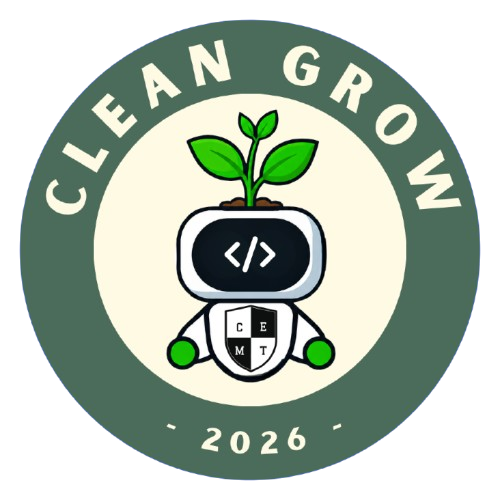

Projetos

CleanGrow
O projeto "CleanGrow" integra sustentabilidade e automação escolar por meio de um sistema IoT integrado (Firebase/ESP32) que monitora uma composteira e um minhocário. Além disso, o sistema gerencia o reaproveitamento de água condensada de aparelhos de ar-condicionado para irrigar um viveiro de mudas de forma eficiente e automatizada.
Ver mais →
VisionGate
O projeto "VisionGate" integra automação e gestão escolar por meio de um sistema IoT (Arduino) com inteligência artificial que substitui o controle de acesso por pastas. O sistema utiliza Python (FastAPI), JavaScript e C++ para automatizar o registro de frequência em tempo real, combatendo a evasão escolar e otimizando o tempo de aula de forma eficiente.
Ver mais →Nome do projeto
Descreva aqui em 1–2 frases o que o projeto faz e quais tecnologias você usou.
Ver mais →